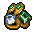

Jewelry
| This article is a stub. You can help Graveyard Keeper Wiki by expanding it. |
| Jewelry | |
|---|---|
 | |
General Information
| |
Source(s)
| |
Buy from :
|
Moneylender (T I) Ms. Charm |
Sell to :
|
Merchant (T III) Moneylender (T I) Ms. Charm |
| Jewelry table | |

Uses
After you have reached 40 with Ms. Charm and completed the two tasks related to the Trade Office (see the Merchant's quest for more details), you could ask her to promote your veggie business by crafting a piece of Jewelry and giving it to her. You will gain 1×
with Ms. Charm and completed the two tasks related to the Trade Office (see the Merchant's quest for more details), you could ask her to promote your veggie business by crafting a piece of Jewelry and giving it to her. You will gain 1×
Fame for the Trade Office, 10 for the Merchant and be able to buy Jewelry for 1
for the Merchant and be able to buy Jewelry for 1 from Ms. Charm and sell it for 75
from Ms. Charm and sell it for 75 to her.
to her.
Recipe
| Jewelry table | |
|---|---|
| Item Produced | Materials Required |
| 1× Jewelry |
1× Gold jewelry details 1× Faceted diamond 2× Faith |
Study
This Item cannot be studied.
Notes
Marquis Teodoro Jr. gives you 1x jewelry after completing his quest to have 7 refugees.
Donkey gives you a piece of jewelry after sending him the cookbook and waiting a day.
| ||||||||||||||